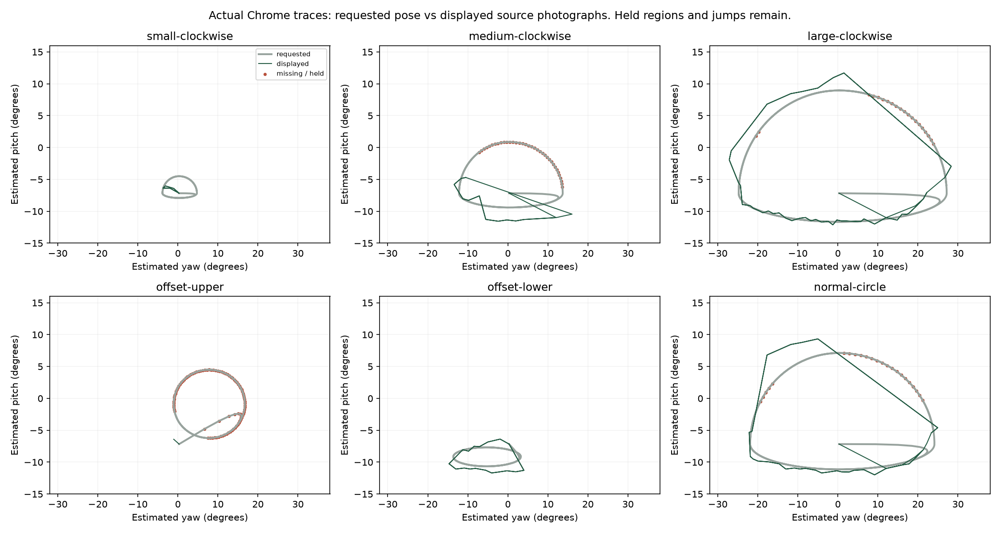
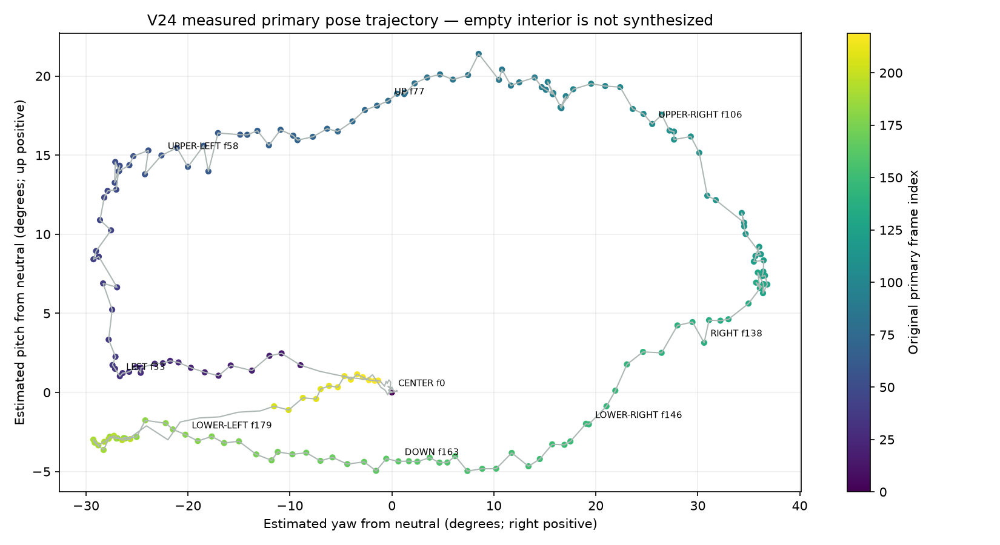
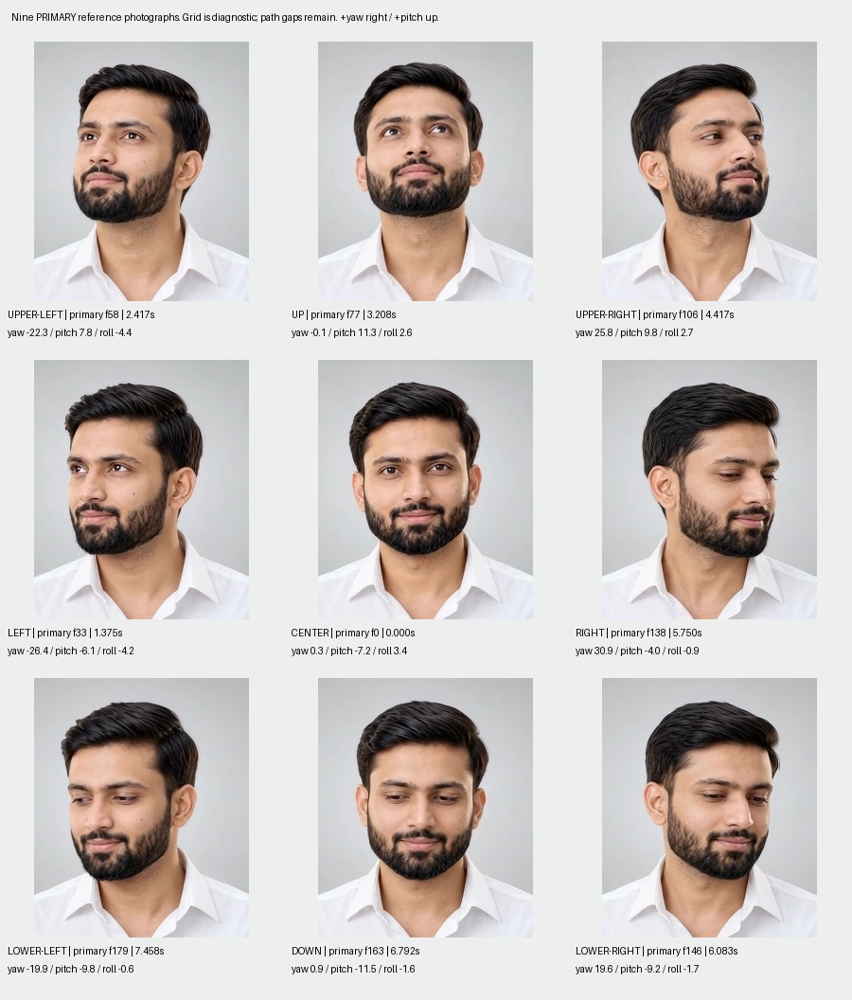
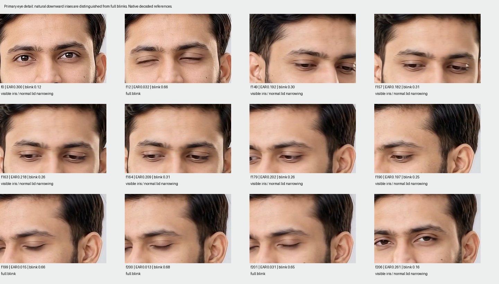
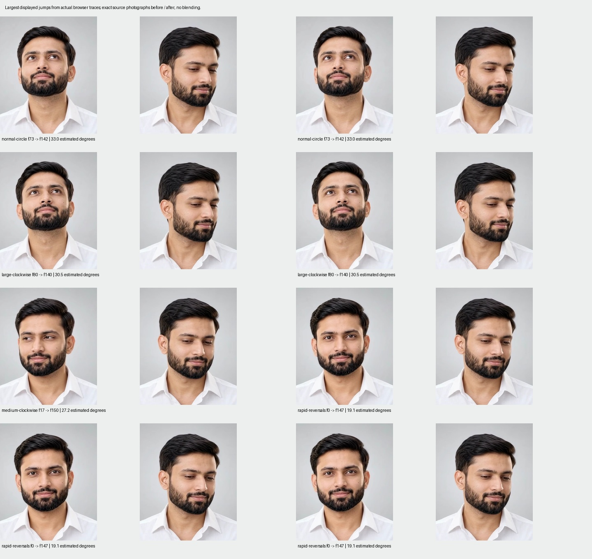
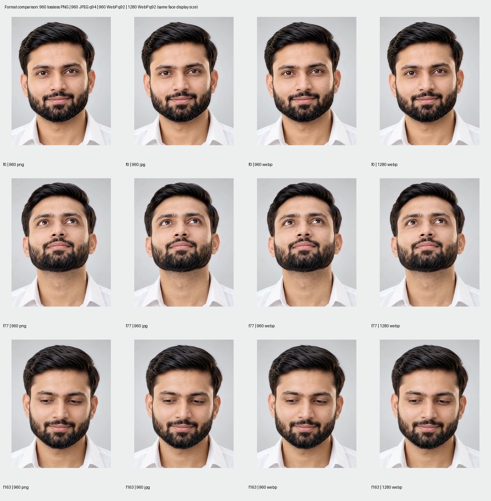

NO-GO for natural tracking across arbitrary circles. All 240 preferred-source frames were audited. The 197-photo atlas preserves the primary identity, but missing intermediate poses cause held orientations and visible jumps. No secondary repair passed. Nothing is promoted.
B and C deliberately use the same primary atlas: zero secondary repairs were approved. This recording shows the real browser result, including holds and jumps. Capture is 25fps; render cadence is approximately 60fps. Neither implies 60fps photographic motion.

| Trajectory | Changes | Unsupported | Large jumps |
|---|---|---|---|
| small-clockwise | 10 | 0.0% | 0 |
| small-counterclockwise | 12 | 0.0% | 0 |
| medium-clockwise | 27 | 34.1% | 4 |
| medium-counterclockwise | 26 | 35.1% | 6 |
| large-clockwise | 98 | 14.8% | 9 |
| large-counterclockwise | 110 | 14.8% | 9 |
| offset-upper | 3 | 79.6% | 0 |
| offset-lower | 36 | 0.0% | 2 |
| slow-circle | 40 | 21.9% | 4 |
| normal-circle | 68 | 21.8% | 7 |
| rapid-reversals | 102 | 0.0% | 29 |
| small-movement | 0 | 0.0% | 0 |
| horizontal-sweep | 24 | 2.4% | 3 |
| diagonal-sweep | 16 | 11.8% | 4 |




All 240 extracted photographs, explicitly played once at original timing. The cursor atlas never plays or seeks an MP4.

TypeScript, lint, 20 unit tests, all five viewport sizes, touch, reduced motion, failure recovery and production build pass engineering checks. Photographic acceptance fails. Nominal decoded-image cap is 47.46 MiB per panel at 960px, 84.38 MiB at 1280px. Actual browser process/GPU memory was not measured.